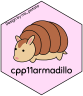

The R Consortium recently spoke with Mauricio “Pachá” Vargas Sepúlveda, a PhD student in Economics at the University of Surrey and the developer behind cpp11armadillo, a package funded through the R Consortium’s ISC grant program. cpp11armadillo connects R with the Armadillo C++ linear algebra library through the modern cpp11 interface, providing developers with safer, more flexible tools for computationally intensive work.
The R Consortium has provided grants to Pachá two different times, including most recently in late 2024.
In this interview, conducted by email, Pachá discussed the current state of the project, the balance between safety and performance, and the kinds of features that make cpp11armadillo especially useful compared to other approaches. He also shared insights on future development priorities and reflected on his experience working with the R Consortium grant process.
The conversation highlights both the technical progress of cpp11armadillo and the value of community support in driving open-source innovation within the R ecosystem.
What is the current development status of cpp11armadillo, and is the speed-optimized version you mentioned in the proposal already available for testing?
cpp11armadillo has reached a stable stage according to the Tidyverse’s lifecycle. This means I am happy with the interface, I do not see major issues, and it reached a point where I was happy to share it with others. The current CRAN version is 0.5.4 and is available here: https://cran.r-project.org/package=cpp11armadillo.

At the present time I have a testing branch on my local git tree, it requires further work (lots of work, actually), and it aims at obtaining a (much) better speed to convert from R to Armadillo data types and vice versa. cpp11armadillo followed this premise from Don Knuth: “premature optimization is the root of all evil.” I tried to make sure to write a comprehensive list of unit tests and prioritize safety over speed (e.g., if we convert R’s integers to C++ unsigned integers we need to be careful about negative values and check bounds to avoid undefined behaviours).
Which specific Armadillo linear algebra operations are currently supported, and how does cpp11armadillo handle data conversion between R and C++ internally?
We currently support most Armadillo functions, as we covered with examples in the official documentation. Some functions require dedicated wrappers for them, as it is the case of Armadillo’s Principal Component Analysis. Because R already provides a PCA function, we focused on supporting sparse matrices and expanding on different functions such as the Fast Fourier Transform
For R developers already familiar with Rcpp, what advantages does cpp11armadillo offer?
Both use the same underlying library. The main difference is that cpp11armadillo is slightly faster with the default configuration, which is not as important because we can compile against OpenBLAS or other optimised linear algebra libraries. The main advantage of cpp11armadillo over RcppArmadillo is that we offer a vendoring feature, which allows the user to copy all of cpp11armadillo codebase into an R package, eliminating the dependency requirement, allowing to use a snapshotted version of the code for replication purposes, and it facilitates running code routines in restricted environments (such as servers or clusters with restricted internet access).
Beyond speed optimization, what additional features or enhancements do you plan to implement to make cpp11armadillo more attractive for developers building computationally intensive R packages?
Future versions plan to offer a much better copy of complex numbers that right now we import back into C++ using lists because of a limitation in the underlying cpp11 package codebase. We already sent a few Pull Requests to add complex numbers support in cpp11, plus a few fixed bugs affecting attributes for matrices, adding the code to export C++ ordered and unordered maps to R lists, and a few other features and bug fixes.
How has it been working with the R Consortium? Would you recommend applying for an ISC grant to other R developers?
It has been a great experience. My first proposal was accepted, which allowed me to create a first stable version, and then the second proposal was rejected over totally valid concerns about coordination between cpp11 (maintained by Posit, formerly RStudio) and cpp11armadillo development. For a third proposal I obtained funding again after reading the feedback carefully and focusing exclusively on the internal package development instead of uncertain upstream changes.
What Projects Does the R Foundation Fund?
Our grants target projects that make a difference in the R community, focusing on:
Technical Infrastructure: Enhancements in key R packages, development tools like R-hub, and improvements for R on various operating systems.
Social Infrastructure: Projects like SatRDays that promote local engagement and initiatives for better tracking of R Consortium activities.
We’re eager to see your innovative ideas and how they can propel the R ecosystem forward. This is a call to action for all who wish to contribute to the growth and enhancement of R. Let’s build a stronger R community together!
Submit your proposal now and be a part of shaping the future of the R Ecosystem. Learn more about how to apply here.
We look forward to your submissions and furthering the R community’s advancement together!